W#8 Homework topics: Typical Data Issues, More linear models and Interpretation
Jan Lorenz
Errors in data
Strange Airports (Homework 02)
# A tibble: 4 × 8
faa name lat lon alt tz dst tzone
<chr> <chr> <dbl> <dbl> <dbl> <dbl> <chr> <chr>
1 DVT Deer Valley Municipal Airport 33.4 112. 1478 8 A Asia/Chongq…
2 EEN Dillant Hopkins Airport 72.3 42.9 149 -5 A <NA>
3 MYF Montgomery Field 32.5 118. 17 8 A Asia/Chongq…
4 SYA Eareckson As 52.7 174. 98 -9 A America/Anc…Airport errors
# A tibble: 4 × 8
faa name lat lon alt tz dst tzone
<chr> <chr> <dbl> <dbl> <dbl> <dbl> <chr> <chr>
1 DVT Deer Valley Municipal Airport 33.4 112. 1478 8 A Asia/Chongq…
2 EEN Dillant Hopkins Airport 72.3 42.9 149 -5 A <NA>
3 MYF Montgomery Field 32.5 118. 17 8 A Asia/Chongq…
4 SYA Eareckson As 52.7 174. 98 -9 A America/Anc…Correct locations (internet research and location of maps):
- Deer Valley Municipal Airport: Phoenix
33°41′N 112°05′W Missing minus for lon (W) - Dillant Hopkins Airport: New Hampshire
42°54′N 72°16′W lon-lat switched, minus (W) - Montgomery Field: San Diego
32°44′N 117°11″W Missing minus for lon (W) - Eareckson As: Alaska
52°42′N 174°06′E No error: Too west,it’s east!

Conclusions on data errors
- In real-world datasets errors like the 3 airport are quite common.
- Errors of this type are often hard to detect and remain unnoticed.
- This can (but need not) change results drastically!
Conclusions
- Always remain alert for inconsistencies and be ready to check the plausibility of results.
- Skills in exploratory data analysis (EDA) are essential to find errors and explore their nature and implication
- Errors are unpredictable, of diverse types, and often deeply related to the reality the data presents.
- One reason why EDA can not be a fully formalized and automatized process.
Corona questions (Homework 03)
Same phenomenon different data?
Question: Is the data of OWiD and WHO the same?
No.
Why?
What are the data sources of WHO and OWiD?
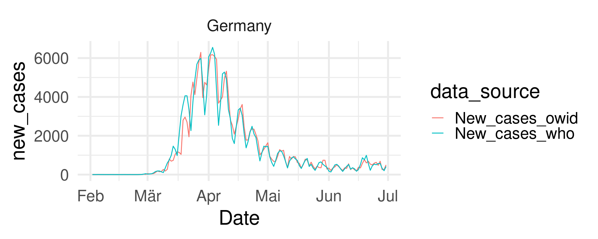
- OWiD documentation refers to have data from CSSE at Johns Hopkins University which document various data sources (e.g., a newspaper from Germany)
- WHO documentation says: “WHO collected the numbers of confirmed COVID-19 cases and deaths through official communications under the International Health Regulations (IHR, 2005), complemented by monitoring the official ministries of health websites and social media accounts.” For Germany this is the Robert-Koch-Institut RKI.
Good reasons for different data?
- During the pandemic daily new case numbers were relevant for decisions about safety measures.
- In reality, data comes with delays.
Example: Recent new cases in Germany (RKI). Notice many new cases several days ago. 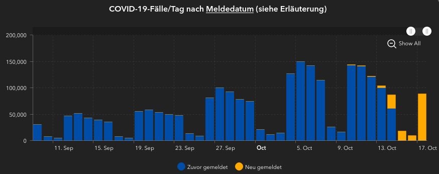
Conflict day-to-day consistency and correctness
- Fixing daily cases is useful to record the numbers on which daily safety decisions are based.
- Corrected cases (which also change data from the past) are better for analysis in retrospect. It reflects the actual pandemic better.
Reported cases and real cases?
Case numbers are to inform us about real cases. What type of data analysis question is this? (Descriptive, Exploratory, Inferential, Predictive, Causal, Mechanistic)
- Inferential: “Quantify whether the discovery is likely to hold in a new sample.”
- Here: What do reported cases tell us about cases in the whole population?
- Limitations
- We cannot test all
- Tests are not on a random sample
- Mild/asymptomatic cases remain unnoticed even to individuals
- …
The unknown: What is the dark figure?
Excercise for German new case counts
- Can we infer the real incidence (= new cases per 100,000)?
- What can we infer the trend of the real incidence?
Incidence: Not really, we would need a either a random sample (then we can infer the fraction of infected), or an idea how to estimate the dark figure.
Trend: Yes! Under the assumptions that reported cases do reflect a relevant part of the pandemic and the limitation remain mostly constant during the observed trend.
Smoothing time series
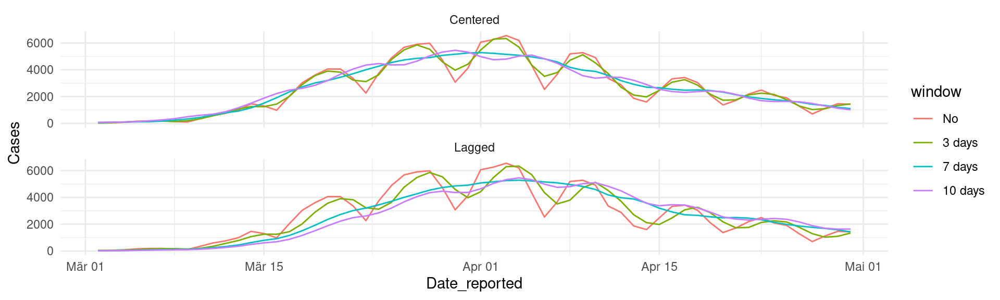Centered: Leaves smoothed data close to real data.
Lagged: Lags the smoothed data, but can be consistently computed for the newest day
Remember: Data with weekly seasonality is best smoothed with a weekly window!
Total death per million and human development
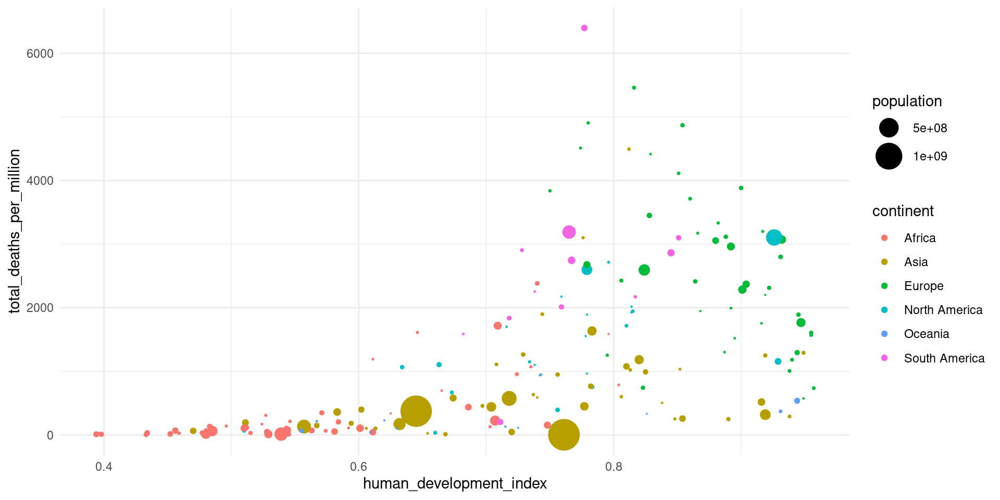What findings? Explanations?
ESS questions (Homework 03)
Level of measurement
- Nominal: the data can only be categorized
- Ordinal: the data can be categorized and ranked
- Interval: the data can be categorized, ranked, and evenly spaced
- Ratio: the data can be categorized, ranked, evenly spaced, and has a natural zero.
What is the difference of level of measurement and data type?
Mainly perspective:
- Level of measurement is about the variable/the thing which is measured.
- Data type is more about the technical way to store data.
Scales in surveys/questionaires
Likert scale: Strongly disagree … [scale steps] … Strongly agree
Rating scales: Extreme statement … [scale steps] … Opposite statement
What level of measurement do these questions have?
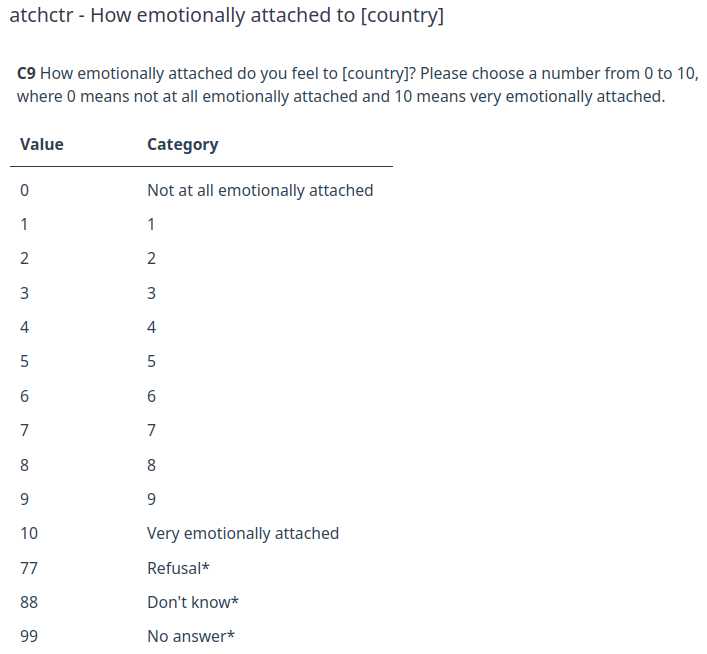 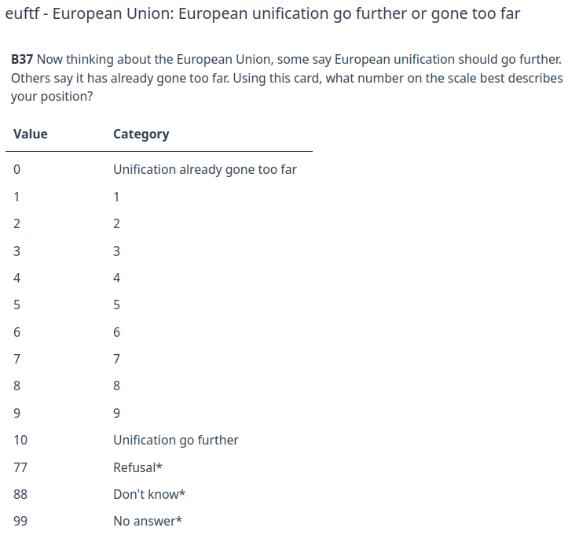
Ordinal clearly, interval assuming scale steps are equal, ratio assuming 5 as natural zero
Dealing with missing values
Coding in the ESS data:
- Interval data coded numerically 0, 1, …, 10
- Missing values with numerical codes 77, 88, 99
What is the reason for missing data? This can be important for inferential questions!
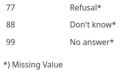
For numerical computations these must be filtered out or coded as NA!
ess |> select(euftf) |>
mutate(euftf_na = euftf |> na_if(77) |> na_if(88) |> na_if(99)) |>
summarize(across(.fns = function(x) mean(x, na.rm = TRUE)))# A tibble: 1 × 2
euftf euftf_na
<dbl> <dbl>
1 13.7 5.20Emotional attachment
Question: What is the relation of the emotional attachment of Europeans to their own country and to Europe?
ess |>
filter(essround == 9) |>
count(atchctr, atcherp) |>
na.omit() |>
ggplot(aes(atchctr, atcherp,
size = n, color = n)) +
geom_point() +
geom_smooth(aes(weight = n),
method = 'loess',
formula = 'y ~ x') +
scale_color_continuous(type = "viridis") +
scale_size_area(max_size = 10) + ylim(c(0,10)) +
coord_fixed() +
guides(size = "none") +
theme_classic(base_size = 24)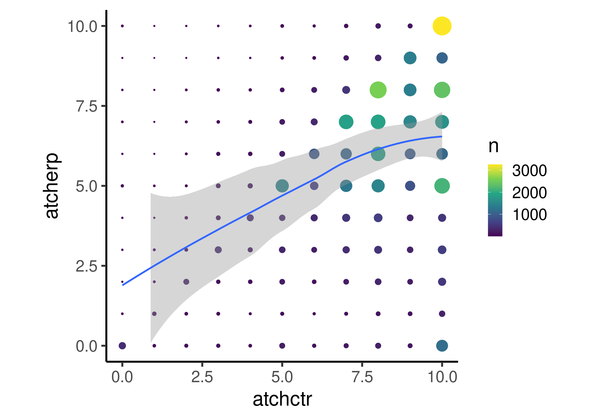
Emotional attachment EU integration
Question: What is the relation of the emotional attachment to the own country to attachment to Europe compared to the attitude about European integration?
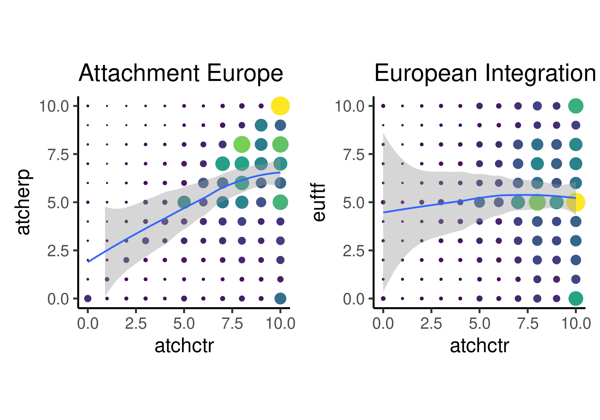- Emotional attachment to the own country and Europe is positively related. (“Positive” here means the sign of the correlation. It does not mean “good”!)
- No compensation like “Emotion must be split between both.”
- Relation of country attachment to EU integration is weak but non-linear.
Weighting after count
How many rows does the the data frame ess |> filter(essround == 9) |> count(atchctr, euftf) |> na.omit() have?
Three different smooth plots
ess |> filter(essround == 9) |> count(atchctr, euftf) |> na.omit() |>
ggplot(aes(atchctr, euftf)) + geom_smooth() 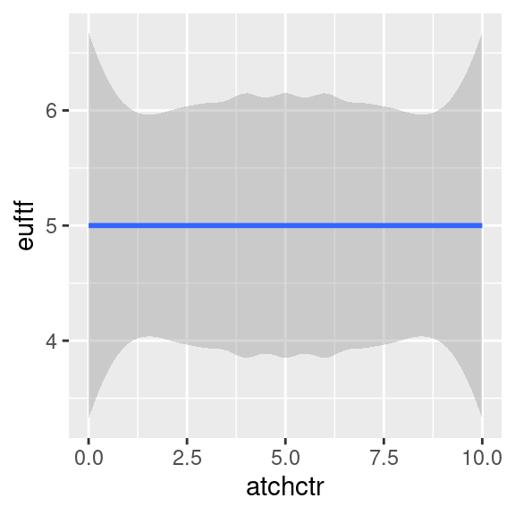
Makes no sense because, just 121 points in a square.
ess |> filter(essround == 9) |> count(atchctr, euftf) |> na.omit() |>
ggplot(aes(atchctr, euftf, weight = n)) + geom_smooth() 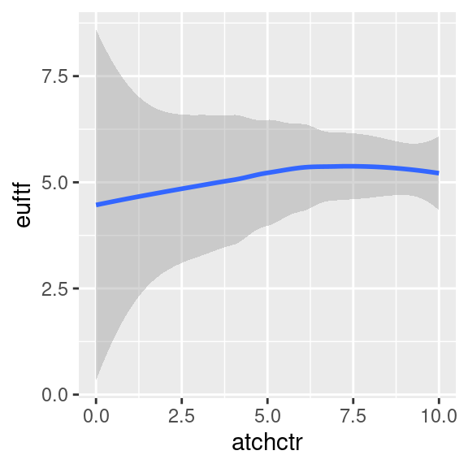
Makes sense weighted by the counts.
Similar to B. Lower uncertainty! Different y-axis limits!
Note, geom_smooth uses stats::loess for less than 1,000 cases (as before), otherwise (as here) mgcv::gam() because it is more efficient computationally. We omit details here.
Significance of nonlinear relation?
- Taking into account the real number of cases the uncertainty range indicates that the non-linear relationship is fairly certain, although small in magnitude.
- Note, we have not looked at uncertainty measures in detail yet.
- Main message here: Low uncertainty and large effect size is not the same!
- In statistics the first is called significant.
- In common language the second is often called significant.
- This dual use of significant is a source of confusion in science communication!
Linear models and R-squared
Linear models
library(tidymodels)
linear_reg() |> set_engine("lm") |>
fit(atcherp ~ atchctr, data = ess) |> tidy()# A tibble: 2 × 5
term estimate std.error statistic p.value
<chr> <dbl> <dbl> <dbl> <dbl>
1 (Intercept) 2.62 0.0411 63.8 0
2 atchctr 0.414 0.00504 82.1 0Interpretation?
When atchctr = 0 the average atcherp is 2.62. For an increase of country attachment by one there is an average increase of 0.414 in European attachment.
R-squared of a fitted model
\(R^2\) is the percentage of variability in the response explained by the regression model.
R-squared is also called coefficient of determination.
Definition:
\(R^2 = 1 - \frac{SS_\text{res}}{SS_\text{tot}}\)
where \(SS_\text{res} = \sum_i(y_i - f_i)^2 = \sum_i e_i\) is the sum of the squared residuals, and
\(SS_\text{tot} = \sum_i(y_i - \bar y)^2\) the total sum of squares which is proportional to the variance of \(y\). (\(\bar y\) is the mean of \(y\).)
\(R^2\) is the square of the correlation coefficient, hence the name. (No math on this today.)

Linear models R-squared
library(tidymodels)
linear_reg() |> set_engine("lm") |>
fit(atcherp ~ atchctr, data = ess) |>
glance() # glance shows summary statistics of model fit# A tibble: 1 × 12
r.squared adj.r.sq…¹ sigma stati…² p.value df logLik AIC BIC devia…³
<dbl> <dbl> <dbl> <dbl> <dbl> <dbl> <dbl> <dbl> <dbl> <dbl>
1 0.122 0.122 2.45 6747. 0 1 -1.12e5 2.25e5 2.25e5 291696.
# … with 2 more variables: df.residual <int>, nobs <int>, and abbreviated
# variable names ¹adj.r.squared, ²statistic, ³devianceInterpretation R-square?
12.2% of the variance of European emotional attachment can be explained by a linear relation with country emotional attachment.
For EU integration attitude.
# A tibble: 1 × 12
r.squared adj.r.sq…¹ sigma stati…² p.value df logLik AIC BIC devia…³
<dbl> <dbl> <dbl> <dbl> <dbl> <dbl> <dbl> <dbl> <dbl> <dbl>
1 0.000702 0.000680 2.75 32.0 1.57e-8 1 -1.11e5 2.21e5 2.21e5 343473.
# … with 2 more variables: df.residual <int>, nobs <int>, and abbreviated
# variable names ¹adj.r.squared, ²statistic, ³devianceLinear models with more predictors
Linear model with more predictors
library(tidymodels)
linear_reg() |> set_engine("lm") |>
fit(euftf ~ atchctr + atcherp, data = ess) |> tidy()# A tibble: 3 × 5
term estimate std.error statistic p.value
<chr> <dbl> <dbl> <dbl> <dbl>
1 (Intercept) 4.05 0.0478 84.8 0
2 atchctr -0.114 0.00599 -19.1 1.12e-80
3 atcherp 0.354 0.00509 69.7 0 - Note, that
atchctrnow has a negative coefficient! - The tiny bit of positive relation explained by
atchctrin a one predictor model can better be explained byatcherp(which we know is correlated withatchctr).
Corona deaths vs. Human development
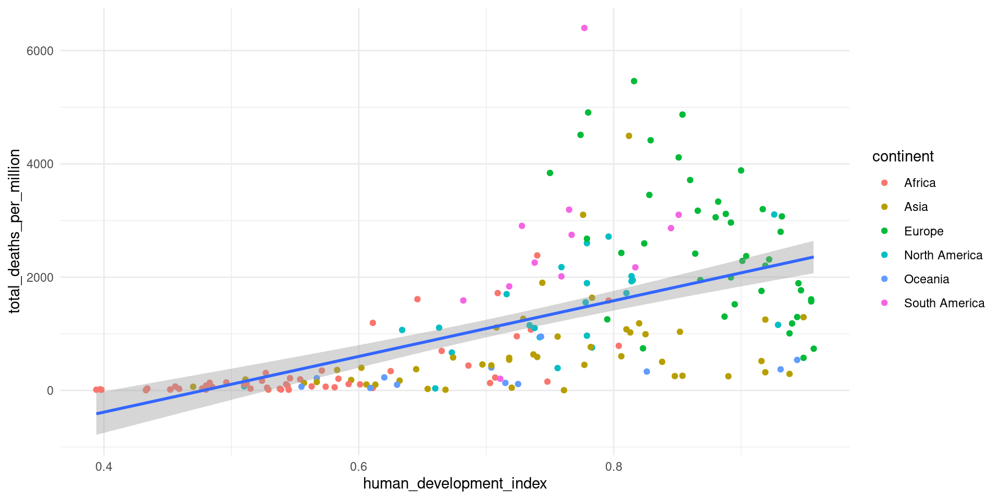Note: Not weighted by population!
Linear model: Total deaths vs. HDI
owid_aug22 <- owid |>
filter(date == "2022-08-31", !is.na(human_development_index),
!is.na(total_deaths_per_million), !is.na(continent))
linear_reg() |> set_engine("lm") |>
fit(total_deaths_per_million ~ human_development_index, data = owid_aug22) |> tidy()# A tibble: 2 × 5
term estimate std.error statistic p.value
<chr> <dbl> <dbl> <dbl> <dbl>
1 (Intercept) -2350. 385. -6.11 5.84e- 9
2 human_development_index 4917. 522. 9.43 1.71e-17Adding a main effect of continents
linear_reg() |> set_engine("lm") |>
fit(total_deaths_per_million ~ human_development_index + continent,
data = owid_aug22) |> tidy()# A tibble: 7 × 5
term estimate std.error statistic p.value
<chr> <dbl> <dbl> <dbl> <dbl>
1 (Intercept) -754. 392. -1.92 0.0560
2 human_development_index 1901. 666. 2.86 0.00480
3 continentAsia 58.5 213. 0.274 0.784
4 continentEurope 1685. 279. 6.04 0.00000000867
5 continentNorth America 742. 254. 2.92 0.00397
6 continentOceania -312. 298. -1.05 0.297
7 continentSouth America 1910. 311. 6.15 0.00000000489A main effect by categorical dummy variables allows for different intercepts per continent.
Adding as interaction
linear_reg() |> set_engine("lm") |>
fit(total_deaths_per_million ~ human_development_index * continent,
data = owid_aug22) |> tidy()# A tibble: 12 × 5
term estim…¹ std.e…² stati…³ p.value
<chr> <dbl> <dbl> <dbl> <dbl>
1 (Intercept) -1555. 581. -2.67 8.19e- 3
2 human_development_index 3329. 1019. 3.27 1.31e- 3
3 continentAsia 563. 940. 0.598 5.50e- 1
4 continentEurope 14759. 1956. 7.55 2.32e-12
5 continentNorth America -1346. 1512. -0.890 3.75e- 1
6 continentOceania 1125. 1424. 0.790 4.31e- 1
7 continentSouth America -4243. 3436. -1.23 2.19e- 1
8 human_development_index:continentAsia -1027. 1419. -0.724 4.70e- 1
9 human_development_index:continentEurope -15377. 2351. -6.54 6.40e-10
10 human_development_index:continentNorth Amer… 2394. 2099. 1.14 2.56e- 1
11 human_development_index:continentOceania -2318. 2063. -1.12 2.63e- 1
12 human_development_index:continentSouth Amer… 7684. 4543. 1.69 9.25e- 2
# … with abbreviated variable names ¹estimate, ²std.error, ³statistic- Note the
*for interaction effect! - Also main effects for both variables are in as coefficients.
- Africa has been chosen as reference category (because it is first in the alphabet).
- An interaction effect allows for different slopes for each continent!
Regression lines by continent
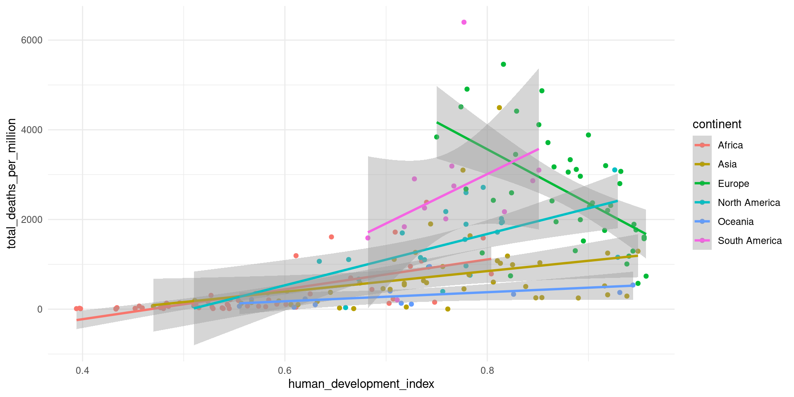The relation between deaths and human development is reverse in Europe.
Simpson’s paradox
Slopes for all groups can be in the opposite direction of the main effect’s slope!